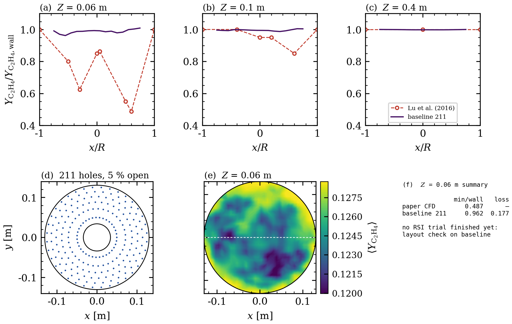
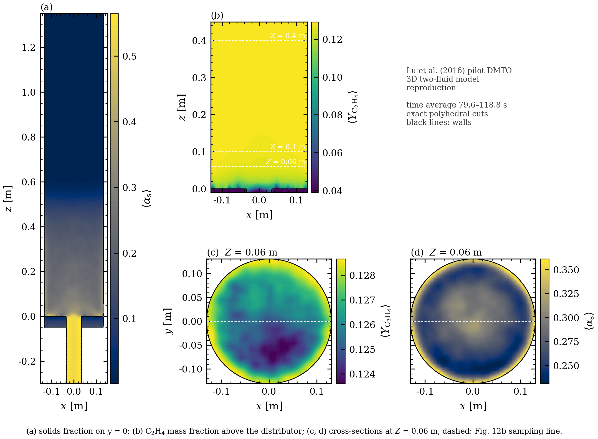
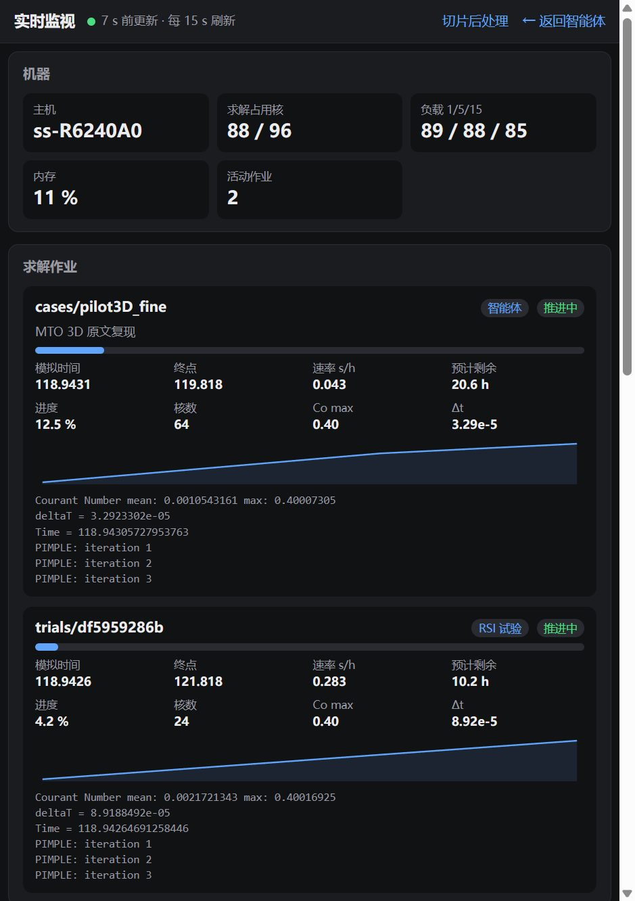
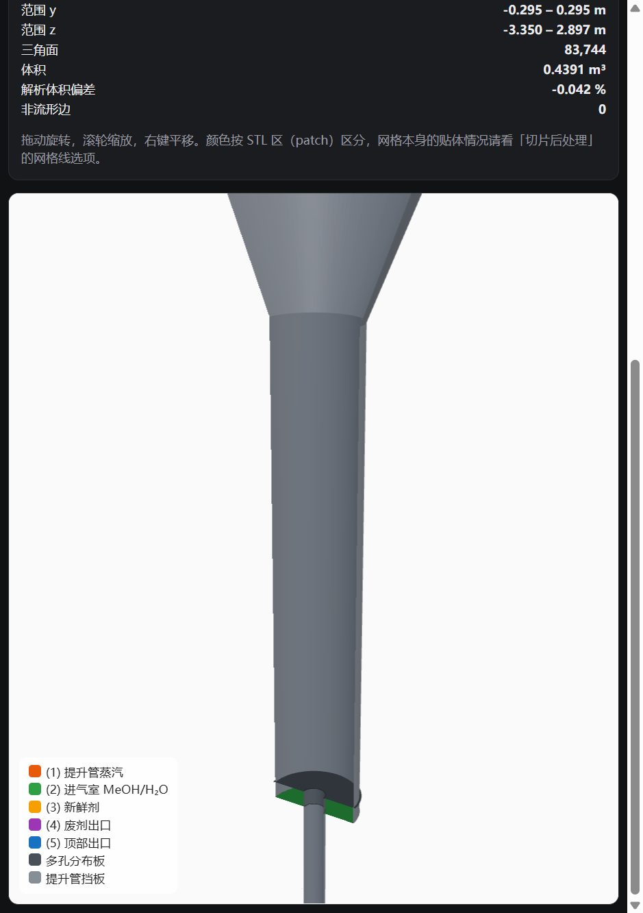
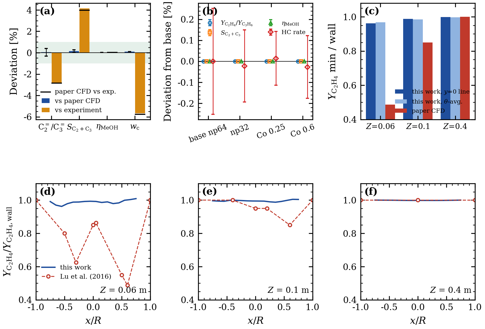

Lu et al., 2016 · 中试 DMTO 流化床 · 三维欧拉双流体 · 8 组分集总反应
你睡觉的时候，
它在替你把论文算完。
CFDriver4MTO 是专门跑 CFD 的智能体。它读论文、建几何、划网格、提交求解，然后守着几天几夜的作业：服务重启、模型断线、浏览器关掉，求解都不中断。每个结论登记前都要过物理验收，每个文件都留哈希。
和原文逐项对，数字全部实测。
对得上的和对不上的放在同一张表里。没跑出来的结果不进这张表。
| 指标 | 本工作 | 原文 | 差异 |
|---|---|---|---|
| 乙烯 + 丙烯选择性 SC2+C3 | 80.71 % | 80.69 % | +0.02 pt |
| C₂H₄ / C₃H₆ 比 | 1.205 | 1.210 | −0.38 % |
| Z = 0.4 m 径向分布 | 平坦 | 平坦 | 一致 |
| Z = 0.06 m 截面 min / 壁面值原文 Fig. 12b 的中心凹陷 | 0.962 | 0.487 | 未复现 |
| 反应基本完成的高度原文 Fig. 12a | 0.11 m | ≈ 0.2 m | 偏早 |
| 项目 | 数值 | 说明 |
|---|---|---|
| 几何体积误差 | −0.042 % | 对原文尺寸 |
| 主筒壁面贴体误差 p95 | 0.039 mm | 网格 3.5 mm |
| 细网格 | 1.98 M | 单元，64 核 |
| 无人值守并行 | 88 核 | 两个长时作业 |
| 基础回归测试 | 146 / 146 | 全部通过 |
来源：私有仓库中的 compare_paper.py、kpi_blocks.py、npm run test:foundation；机器 AMD EPYC 7643 ×96 核，OpenFOAM v2306。
不是更会说，
是更难跑崩。
通用编程智能体把求解器当成一条 shell 命令。CFDriver 把它当成要跑好几天、随时会被打断的作业来管。
- 求解和对话分开
- 求解作业脱离智能体进程独立运行，登记在原子写入的索引里。服务重启后自动接管还在跑的 MPI 作业，手动启动的作业也会被发现并纳入监视。
- 模型断线后接着干
- 请求失败按有界退避重试，连续失败后转为每 5 分钟保活一次，通路恢复就从中断的那一步继续。真实的 503 → 重启 → 自动恢复，已经完整跑通过一次。
- 结论要有证据链
- 生成、网格、求解、测量四个阶段，每一步的输入输出都记哈希。测量阶段只能写
metrics.json，登记前由独立进程重算复核。 - 论文给定的参数不能动
- 开孔率、进料、物性这类原文明确给出的值被锁定，搜索过程改不了。用来检验的观测量单独封存，只在最终检验时打开，防止对着答案调参。
- 出版质量的后处理
- 平面精确切割多面体单元，贴体网格的壁面就是真实边界线，不是方块台阶。衬线字体、LaTeX 符号、300 dpi，图可以直接放进论文。
- 过程看得见
- 实时监视页显示每个作业的模拟时间、速率、预计剩余、Courant 数和日志尾部；工作台里能直接打开算例总览、切片和三维几何。
原文只给了开孔率，
布孔让 CFD 自己反推。
论文写了分布器开孔率 5 %，没写孔数、孔径和位置。反演循环由大模型提出候选布孔，CFD 打分，代理模型用真实结果持续校准。
- 提议模型读历史档案，写一个只能 import math 的 layout 函数
- 筛查沙箱执行，检查 5 % 开孔率、制造约束，代理模型排序
- CFD走完四阶段证据链，24 核，约 11 小时一个
- 接受改进必须超过两倍的时均窗口噪声
- 校准每 3 个真实结果校准一次代理模型，评估器本身不动

它交出来的东西。
下面都是智能体在这次复现里实际生成的图和界面截图，没有重画。




还没做到的，也写在这里。
这些问题没解决之前，页面上不会出现“完整复现”或“超过某某”。
未复现Fig. 12b 截面凹陷
Z = 0.06 m 的 min/壁为 0.962，原文 0.487。细网格复算和分布器反演正在进行。
偏早Fig. 12a 反应完成高度
本工作 0.11 m，原文约 0.2 m，可能与底部布气和网格分辨率有关。
进行中和通用编程智能体的对比
同模型 A/B 实验已设计好，全过程录屏；结果出来之前不下结论。
设计如此不会越过人工审批
断线恢复只在自动模式下续推，危险命令仍然停下来等人确认。
想在你的算例上试试？
CFDriver4MTO 目前不公开源代码，基于开源的 NullFlux 构建。合作和试用请在 NullFlux 仓库开 issue 联系作者。